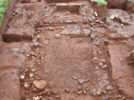
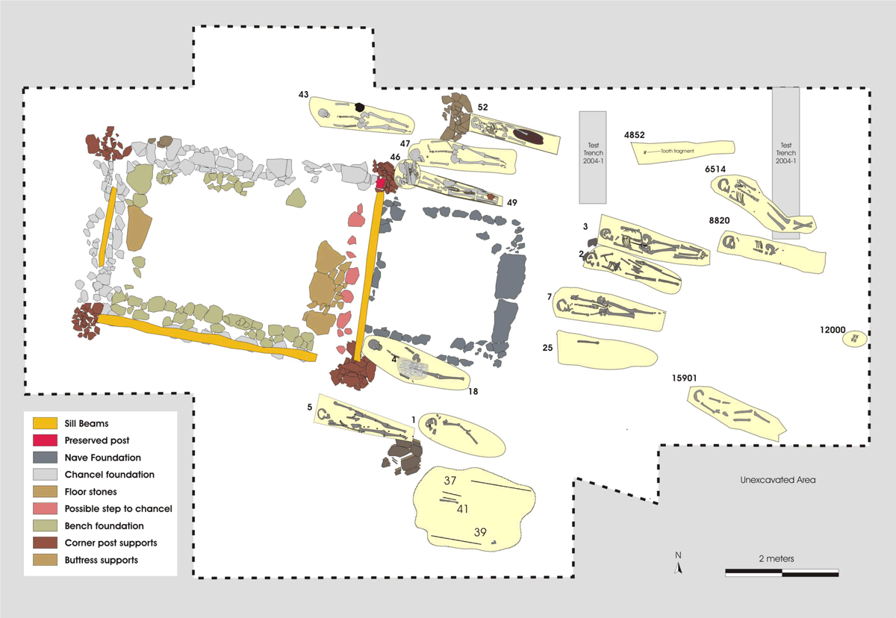
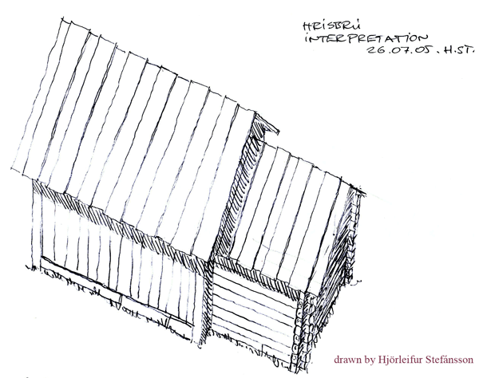

Archaeological Field Work | 2004 Field Season - Hrísbrú Stave Church Uncovered
Our 2004 work resulted in the discovery of wooden remnants of church’s foundation, as well as sill beams, corner posts, and other architectural features. These finds shed new light on the construction techniques used for conversion period churches.
The Hrísbrú church consisted of a chancel and a nave, forming a building of two connected rectangular rooms. The larger, with a doorway opening to the west, is a rectangular structure and clearly served as the nave. The smaller chancel (enclosed space around the altar) on the eastern end of the building was almost perfectly square. Measured from the outside, the nave is 3.2 m wide and 4.3 m long, while the dimensions of the chancel are approximately 2.5 x 2.5 m.
Four additional inhumation graves surrounding the church were excavated during the 2004 season. This brings the total number of burials we have found in the Kirkjuhóll cemetery to 18. All of these burials are inhumations, while at least two of them are reburials deposited along the southern and northern walls of the chancel.
 The Hrísbrú church after excavation.
 A map of the Hrísbrú church and burial grounds (click to enlarge)
 A drawing that shows the appearance of the Hrísbrú stave church (click to enlarge).